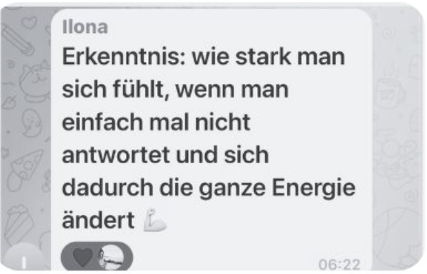
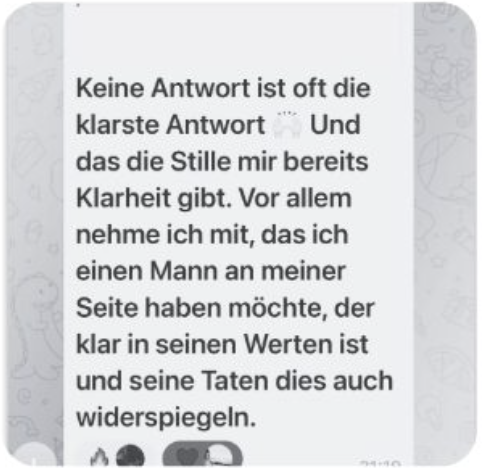

Tag 1
Sag es laut.
Beziehung. Kinder. Heiraten. Was davon willst du?
Heute sagst du es einer einzigen Person: dir. Ohne „aber ich bin da auch flexibel" hinterherzuschieben.
Next One
7 Audios. 7 Tage. Start am 19. September.
Ob ihr euch seit drei Wochen kennt oder seit drei Jahren.
37 € einmalig · Start am 19. September · Dauerhafter Zugang
NEXT ONE zeigt dir in 7 Tagen, was er dir anbietet. Damit du nicht noch ein Jahr wartest, ohne eine Antwort zu bekommen.
 Als MindFuck Coach habe ich in 10 Jahren über 500 Frauen begleitet. Ausgebildet in Positiver Psychologie und Embodiment.
Als MindFuck Coach habe ich in 10 Jahren über 500 Frauen begleitet. Ausgebildet in Positiver Psychologie und Embodiment.


Der Unterschied
Er hat nicht zugesagt.
Er hat gesagt: er meldet sich.
Deiner Freundin sagst du nicht ab. Du schreibst: „Ich weiß noch nicht, ob ich Samstag kann."
Samstagnachmittag. Sofa. Handy neben dir.
Du schaust, ob er online war.
Du liest seine letzte Nachricht zum 7. Mal.
Wo ist es gekippt?
War deine letzte Nachricht zu viel?


Dann schickst du deiner Freundin eine 7 Minuten lange Sprachnachricht, um zu klären, wie er das gemeint hat. Sie hört sie sich an. Sie weiß es auch nicht.
Und irgendwann zwischen acht und zehn passiert das, was du längst kennst.
Aus „Das reicht mir nicht" wird wieder „Vielleicht erwarte ich zu viel."
„Das ist für mich halt No-Go eigentlich. Es ist ein No-Go, aber ich bin dann immer noch so, ja, dann habe ich es halt gemacht."
Lies den Satz nochmal.
Sie kennt ihre Grenze. Und übergeht sie im selben Satz.
Genau da sitzt es.

Der eigentliche Grund
Du willst eine Beziehung.
Du willst Kinder.
Du willst heiraten.
Sagst du das auch?
Oder sitzt du beim ersten Kaffee, findest ihn gut und hörst dich sagen: „Ich bin da ganz entspannt. Mal schauen, was passiert."
Weil „Ich will eine Beziehung" nach Druck klingt.
Weil du nicht anstrengend wirken willst.
Weil Männer angeblich verschwinden. Sobald eine Frau zu früh sagt, was sie will.
Also machst du deinen Wunsch kleiner.
Damit die Chance auf ihn größer bleibt.
Was dich das kostet
Dann datest du unverbindlich, obwohl du etwas Festes willst.
Oder ihr seid längst etwas. Nur jedes Gespräch über nächstes Jahr endet mit: „Lass uns doch erstmal schauen, wie es sich entwickelt."
Drei Monate später schaut ihr immer noch.
Ein Jahr später auch.
Manchmal zwei.
Du brauchst keine weitere Erklärung. Du brauchst eine Antwort, mit der du entscheiden kannst.
Ich will es wissen →
Warte drei Tage mit deiner Antwort.
Schreib nicht zuerst.
Mach dich rar.
Sei nicht zu verfügbar.
Lass ihn kommen.
Und der Klassiker: Arbeite erst an dir. Dann kommt der Richtige.
Was ich meinen Frauen im Call dazu sage:
Das ist alles Quatsch.
Du rechnest aus, ob du nach drei oder nach fünf Stunden antworten darfst.
Und die eine Frage bleibt offen. Die, die dein Jahr verändert:
Was bietet dieser Mann dir an?
Du kannst hundert Bücher lesen. Du kannst seine Kindheit auseinandernehmen. Du kannst genau erklären, warum Männer Raum brauchen.
Und sitzt Samstag trotzdem auf dem Sofa. Mit demselben Handy. Mit derselben offenen Frage.
Kein Mann sagt dir beim ersten Kaffee: „Perfekt. Hochzeit im Mai?"
Aber ein Mann kann dir sagen:
„Ja, ich will eine Beziehung. Kinder will ich auch. Und jetzt schauen wir, ob das mit uns passt."
Merkst du den Unterschied?
Er verspricht dir nichts. Er weiß, wohin er will.
Der neue Blick
Und entscheiden, ob du das willst.
Was in ihm vorgeht, weiß ich nicht. Nach 10 Jahren mit über 500 Frauen sage ich dir ehrlich: Ich kann nicht in den Kopf eines Mannes schauen. Du auch nicht.
Was auf dem Tisch liegt, kannst du sehen. Erraten musst du es nicht.
Dafür brauchst du keine Gedanken zu lesen. Du drehst seine Worte so lange, bis wieder Hoffnung reinpasst. Hör damit auf.
Nicht mehr: „Was meint er damit?" Sondern: „Was bietet er mir an? Und will ICH das?"
Das bekommst du
Audio, weil du es beim Anziehen hörst.
Morgens, weil die Aufgabe dann den ganzen Tag Zeit hat.
7 Tage, weil du nach zwei noch nichts entschieden hast und nach dreißig aufgegeben hättest.

Tag 1
Beziehung. Kinder. Heiraten. Was davon willst du?
Heute sagst du es einer einzigen Person: dir. Ohne „aber ich bin da auch flexibel" hinterherzuschieben.
Tag 2
Keine Wunschliste mit 27 Punkten.
Du legst die Dinge fest, bei denen du nicht feilschst. Auch dann nicht, wenn du ihn inzwischen richtig gut findest.
Tag 3
Du fragst früh, was er will. Beim ersten Kaffee statt nach fünf Dates. Und wenn ihr euch seit Jahren kennt, dann diese Woche.
Es gibt eine Art, das zu fragen, nach der ein Mann bleibt. Und eine, nach der er flüchtet.
Du bekommst die erste. Wörtlich.
Tag 4
„Ich weiß gerade nicht, was ich will."
Diesen Satz hast du bisher übersetzt. In etwas, das noch kommt.
Nach diesem Audio macht er etwas anderes mit dir.
Tag 5
Du kennst seine Muster längst. Du hast sie nur jedes Mal erklärt.
An diesem Tag hörst du dir selbst dabei zu.
Das ist der unangenehmste Tag der Woche. Und der, nach dem die meisten Frauen mir schreiben.
Tag 6
Er schreibt nach drei Wochen: „Hey, wie geht's?"
Du weißt genau, was danach passiert. Es ist jedes Mal dasselbe.
Hier bekommst du die zwei Sätze, nach denen es diesmal nicht passiert.
Tag 7
Jetzt liegt alles vor dir. Was du willst. Was er anbietet. Was du bisher weggeredet hast.
Und dann entscheidest du.
This one? Or Next One?
Dazu bekommst du
Zwei Minuten. Auf deinem Handy. Für jeden Abend, an dem dein Nein weich wird.
Heute schreibst du auf, was du willst. Und die drei Dinge, bei denen du nicht feilschst.
In vier Monaten sitzt du wieder auf dem Sofa und denkst: Vielleicht sehe ich das gerade zu streng.
Dann öffnest du deinen Maßstab. Und liest deinen eigenen Satz. Mit Datum.
Er war dabei, als du klar warst. Und er erinnert sich besser als du.
Ein Maßstab misst. Er diskutiert nicht.
Und wenn du unsicher wirst, beantwortest du vier Fragen. Zwei Minuten später weißt du, ob das, was du willst, und das, was da ist, zusammenpassen.
Ein Link auf deinem Handy. Kein Download, kein Ausdrucken, kein Passwort. Alles bleibt auf deinem Gerät, weil niemand außer dir lesen muss, was du über deine Beziehung schreibst.
Und er bleibt dir. Du wirst ihn wieder aufmachen. Vielleicht nächsten Monat, vielleicht in zwei Jahren. Der Maßstab bleibt derselbe. Du hast ihn ja festgelegt.
Und wie sich das anfühlt
Dein Handy liegt auf dem Tisch. Display nach unten.
Du schaust nicht, ob er online war. Nicht weil du dich zusammenreißt. Sondern weil du weißt, woran du bist.
Du bist verabredet.
Nicht falls er absagt. Verabredet.
Das ist der Unterschied. Und dafür brauchst du 7 Tage, keine zwei Jahre.
Next One starten →Was Frauen schreiben
Ich habe endlich meine ehrliche Meinung geäußert. Es kam keine Reaktion. Aber ich habe mich viel leichter gefühlt.
Keine Reaktion – und trotzdem leichter. Weil sie nicht länger raten musste.


Originalnachrichten · Namen teilweise anonymisiert
Sie hat nicht bekommen, was sie wollte. Sie hat bekommen, was sie brauchte: eine Antwort.
Und eine andere Frau schrieb: „Ich nehme vor allem mit, mich immer zu fragen: Warum will ich gerade, dass er mir schreibt?"
Wann jemand kommt, weiß ich nicht. Ob der Mann, den du gerade willst, THIS ONE ist, weiß ich auch nicht.
An Tag 7 kann deine Antwort THIS ONE heißen. Dann bleibst du. Diesmal weißt du warum.
Was er wirklich fühlt, sage ich dir nicht. Wir schauen auf das, was vor dir liegt. Plant er? Sagt er zu? Wird aus „irgendwann" auch mal ein Datum?
Was er dir anbietet, liegt auf dem Tisch. Du entscheidest, ob du es nimmst.
Ich arbeite mit Frauen, die etwas entscheiden wollen. Nicht mit Frauen, die noch eine Meinung sammeln.

Über mich
Seit über 10 Jahren arbeite ich mit Frauen an genau diesem Moment:
„Das reicht mir nicht."
Fünf Minuten später: „Vielleicht erwarte ich einfach zu viel."
Über 500 Frauen habe ich begleitet. Und ich habe drei Ausbildungen, die genau an dieser Stelle zusammenspielen.
Weil genau da, wo aus „Das reicht mir nicht" wieder „Vielleicht erwarte ich zu viel" wird, ein Gedanke sich selbst überschreibt. Das ist die Stelle, an der ich arbeite.
Weil ich dich nicht frage, was mit dir nicht stimmt. Ich frage dich, welche Beziehung du willst.
Weil du um 22:17 Uhr längst weißt, was richtig wäre. Und es trotzdem schwer wird.
Welche andere Frau in diesem Feld hat genau diese drei? Ich kenne keine.
Und ich kenne die andere Seite selbst gut genug. Ich habe jahrelang gewartet, dass ER mir sagt, woran ich bin. Ich wusste alles über ihn. Warum er Zeit braucht. Warum ich Verständnis haben sollte. Warum dieser eine Rückzug nichts bedeutet.
Eine Person habe ich dabei ziemlich schlecht kennengelernt.
Mich.
Heute weiß ich beim ersten Kaffee, dass ich eine Beziehung will. Und ich sage es. Nicht beim fünften Date, wenn ich vorher abgecheckt habe, ob er dasselbe will. Beim ersten.
Nicht weil ich weiß, dass er bleibt. Sondern weil ich keine zwei Jahre mehr brauche, um herauszufinden, ob wir dasselbe suchen.
Und noch etwas über mich
Und dann gibt es den Mops.
Ein Mops verbiegt sich für niemanden.
Und wird trotzdem geliebt.
Er hat seinen eigenen Kopf. Er macht keine Kunststücke, damit man ihn mag. Er sieht aus wie er aussieht und entschuldigt sich nicht dafür.
Ich bin der Mops.
Samstagabend sitze ich mit einem Glas Champagner-Rosé auf dem Sofa. Der Mops liegt neben mir. Und mein Handy liegt mit dem Display nach unten.
Ja, Champagner an einem normalen Samstag. Manche finden das übertrieben.
Das ist okay. Ich arbeite nicht mit denen.
Next One
37 €
Einmalig. Start am 19. September. Dauerhafter Zugang.
Ja, ich will es wissen →Sichere Zahlung · Start am 19. September
7 Tage kosten dich 37 €.
Das letzte Jahr, in dem du nicht gefragt hast, hat dich mehr gekostet.
Ja. Jeden Tag gibt es eine Aufgabe fürs Daten und eine fürs Hin und Her. Wenn du gerade jemanden kennenlernst, stellst du die Fragen, bevor aus drei Dates drei ungeklärte Jahre werden.
Du entscheidest, was du wann sagst. An Tag 1 sagst du es nur dir. Ab Tag 3 zeige ich dir, wie du früh fragst, ohne aus dem ersten Kaffee ein Bewerbungsgespräch zu machen.
Dann weißt du es diese Woche. Nicht irgendwann nächstes Jahr.
Zehn Minuten fürs Audio. Die Aufgabe passiert in deinem Alltag, nicht drei Stunden mit Textmarker am Schreibtisch.
Tag 1 kannst du ab dem 19. September hören. Ab dem nächsten Morgen kommt jeden Tag das nächste. Danach gehören die Audios dir.
Gut. Dann lesen wir das nicht nochmal. Warum er sich zurückzieht, lernst du hier nicht. Was seine Kindheit damit zu tun hat, auch nicht.
Du klärst drei Dinge: Was will ich? Was bietet er an? Passt das zusammen? Mehr brauchst du dafür nicht.
Entweder er hat zugesagt. Oder du bist woanders.
Er weiß nicht, was er will?
37 € · Start am 19. September · Dauerhafter Zugang
Das ist kein Kurs über Männer. Das ist die Woche, in der du aufhörst zu raten.